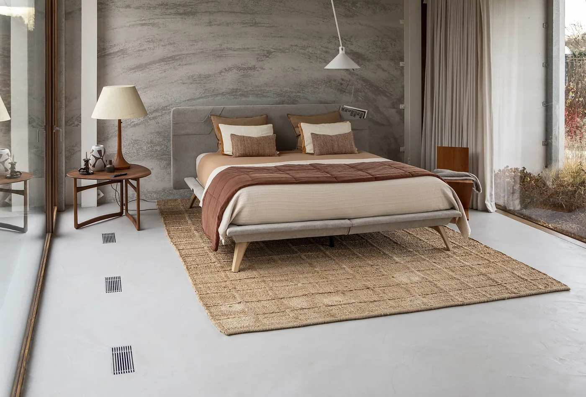
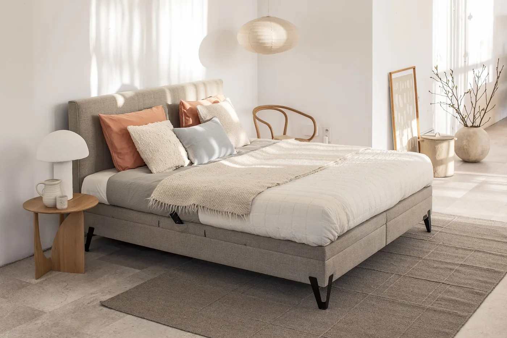
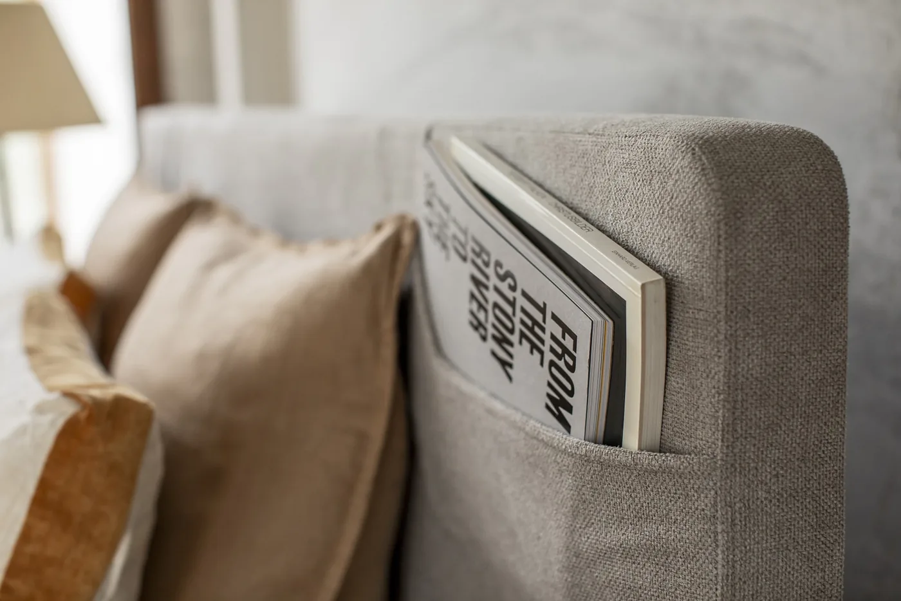
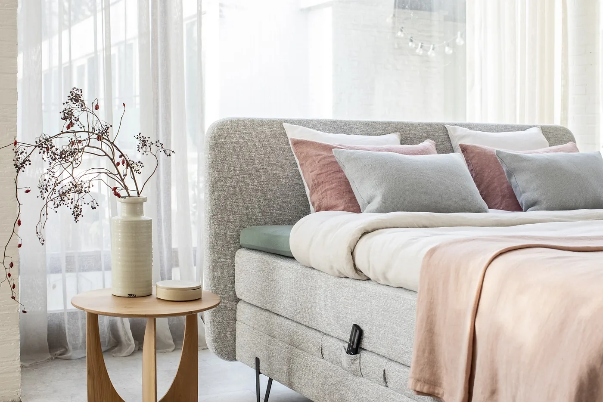
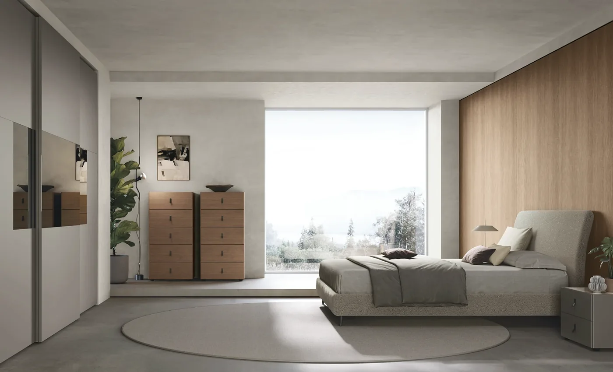

Literie, lits et armoires
Chambre
Boxsprings belges, fixes ou électriques, matelas et sommiers à essayer. Découvrez aussi les lits, chevets, armoires et dressings qui complètent votre chambre.
- Des couchages à essayer allongé
- Fixe ou électrique
- Livraison et installation
Choisir
Trouver le couchage qui vous convient.
Plusieurs couchages sont disponibles à l’essai. Comparez le soutien, l’accueil et les niveaux de fermeté en vous allongeant dans votre position habituelle. Le reste se commande au catalogue.
-
01
Le boxspring
Un ensemble composé d’une base et d’un matelas, parfois complété d’un surmatelas : le confort dépend de la combinaison choisie. Nous proposons aussi des sommiers à lattes.
-
02
Le matelas
Ressorts ensachés, latex, mousse haute résilience ou mémoire de forme : les sensations et le soutien varient selon les matériaux et la construction. Nous vous aidons à choisir selon votre position de sommeil et votre corpulence.
-
03
Fixe ou électrique
Un sommier électrique relève la tête ou les jambes, pour lire confortablement ou se relever plus facilement. À deux, des éléments indépendants permettent à chacun de choisir sa position : 2 × 70, 2 × 80, 2 × 90 ou 2 × 100 cm ; pour une personne : 120 cm. En 200, 210 ou 220 cm de long selon le modèle.
Au magasin
Trois fabricants belges.
Les modèles exposés se déclinent en d’autres tailles, tissus, coloris, têtes de lit et pieds.
-
Velda
Fabriqués en Belgique. Au magasin, découvrez notamment le Fly et l’Imagine, en version fixe ou électrique, dans les configurations proposées par le fabricant.
-
Van Landschoot
Les boxsprings Axelsson, fabriqués en Belgique, en plusieurs hauteurs, en versions fixes ou électriques.
-
Polypreen
Matelas, sommiers à lattes et boxsprings fabriqués à Lommel, en Belgique.
Velda
Quelques modèles Velda.
Tissus, têtes de lit, pieds et fonctions : composez votre couchage selon les options disponibles. Les modèles exposés se voient et s’essaient au magasin.

Un boxspring aux lignes nettes, pieds métal. 
Le Fly : une poche dans la tête de lit, pour le livre du soir. 
Tissu chiné et tête de lit arrondie.
Comprendre les matelas
Comprendre les matières.
- Ressorts ensachés
- Les ressorts individuels offrent un soutien localisé ; l’indépendance de couchage dépend de la construction du matelas.
- Latex
- Un matériau élastique, à l’accueil souple ou plus ferme selon sa formulation.
- Mousse haute résilience
- Une mousse conçue pour retrouver sa forme, en différentes densités et fermetés.
- Mémoire de forme
- Une mousse qui épouse progressivement les contours du corps ; la sensation de chaleur varie selon la composition.
Autour du lit
Lits, chevets, armoires.
-

Tomasella
Le lit et les chevets assortis
Lits et chevets Tomasella, entre autres, dans des finitions qui s’accordent à votre chambre.
-

Rangements
Armoires et dressings
Portes battantes ou coulissantes. Et quand il y a un recoin, une sous-pente, un mur aux dimensions particulières : le sur mesure prend le relais.
Voir le sur mesure
Vos questions
Avant de choisir.
Peut-on essayer un matelas ou un boxspring avant de l’acheter ?
Oui. Plusieurs couchages sont installés au magasin : allongez-vous, sans rendez-vous, et comparez.
Boxspring ou sommier à lattes ?
Les deux offrent des sensations différentes, selon le matelas et la base : essayez-les au magasin pour choisir.
Quelles tailles pour un boxspring électrique ?
À deux : 2 × 70, 2 × 80, 2 × 90 ou 2 × 100 cm ; pour une personne : 120 cm. En 200, 210 ou 220 cm de long selon le modèle.
Venez essayer nos matelas et boxsprings.
Allongez-vous dans votre position habituelle : c’est le test le plus fiable. Notre magasin de literie, à Leval-Trahegnies (Binche), vous accueille sans rendez-vous, à quelques minutes d’Anderlues, à un quart d’heure de La Louvière et moins de trente minutes de Mons. Parking facile d’accès.
- Lundi
- 13h30 – 18h30
- Mardi au samedi
- 10h30 – 18h30
- Dimanche
- Fermé
- Téléphone
- 064 46 07 72
- Livraison
- Par nos soins, dans le Hainaut (Binche, La Louvière, Mons, Charleroi…) et la province de Namur
Pour un projet plus loin, ailleurs en Belgique ou à l’étranger : parlons-en.